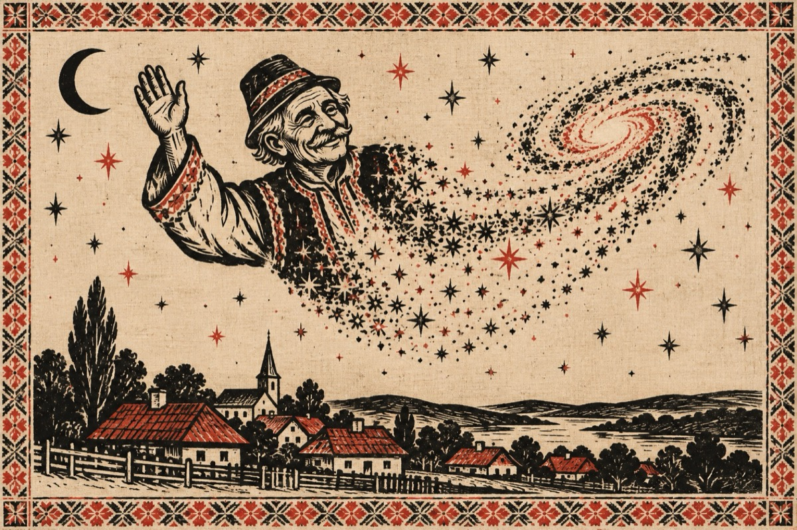

In memoriam Liviu Oros
No bătute-ar să te bată
O făcuși Liviule, lată!
Nu știu Doamne ce-ț veni,
Te-apucași de a mori!?...
Eu crezu-i că e o șagă,
Ce-ț veni atita grabă?
Aveai timp destul în față
Doamne, și-atita poftă de viață!...
.....
Bă preteni, eu vă zâc;
Când eram în mare zvâc,
Șâ m-apucai ge trăit,
Am aflat că am morit!...
Acum, cum v-o fi norocul
Mereți înainte, dară n-o viit protopul!...
Ce o fi, oț mai vedea; PA!...
Ne-ntâlnim în ANDROMEDA!...
Vasile Groza